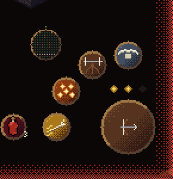
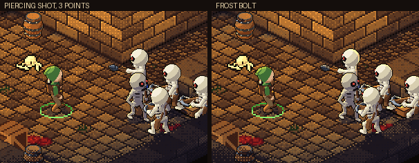
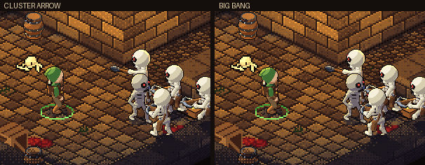
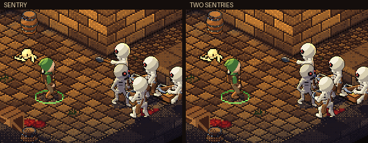
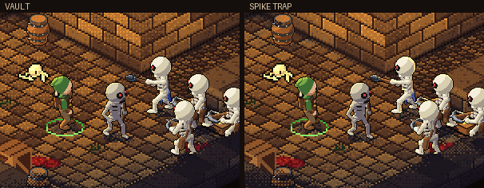

<title>The Ranger's New Kit</title>
<meta name="claude:viewport-fit-sides" content="cover">
<link rel="stylesheet" href="https://fonts.googleapis.com/css2?family=Cinzel:wght@600&family=Source+Sans+3:wght@400;600&display=swap">
<style>
  /* the game's crypt colors, one dark look (same frame as the other round pages); one column: clips, then the numbers */
  :root {
    --crypt: #0d0908; --panel: #18110e; --ember: #c9a77c; --bone: #e8dcc4; --dim: #8a7660; --rule: #2e221b; --gold: #f8de6a;
    --display: 'Cinzel', 'Trajan Pro', Georgia, serif; --body: 'Source Sans 3', 'Segoe UI', system-ui, sans-serif;
    color-scheme: dark;
  }
  html, body { background: var(--crypt); color: var(--bone); }
  body { font: 16px/1.5 var(--body); margin: 0; padding-left: max(16px, env(safe-area-inset-left, 0px)); padding-right: max(16px, env(safe-area-inset-right, 0px)); padding-block: 28px 48px; }
  main { max-width: 680px; margin: 0 auto; display: grid; gap: 36px; }
  section { display: grid; gap: 12px; min-width: 0; }
  h1 { font: 600 1.6rem/1.2 var(--display); color: var(--ember); margin: 0 0 6px; letter-spacing: 0.04em; text-wrap: balance; }
  h2 { font: 600 1.05rem/1.3 var(--display); color: var(--ember); margin: 0; letter-spacing: 0.05em; text-wrap: balance; }
  p, ul { margin: 0; max-width: 64ch; }
  ul { padding-left: 1.2em; display: grid; gap: 4px; }
  .lede { color: var(--dim); }
  figure { margin: 0; display: grid; gap: 8px; }
  .frame { background: var(--panel); border: 1px solid var(--rule); padding: 6px; }
  .frame img { display: block; width: 100%; height: auto; image-rendering: pixelated; }
  .small { max-width: 290px; }
  figcaption { color: var(--dim); font-size: 0.92rem; }
  strong { color: var(--bone); }
  .wrap { overflow-x: auto; }
  table { border-collapse: collapse; font-variant-numeric: tabular-nums; min-width: 420px; }
  th, td { text-align: left; padding: 6px 12px 6px 0; border-bottom: 1px solid var(--rule); }
  th { color: var(--dim); font-weight: 600; font-size: 0.9rem; }
  td.n { text-align: right; color: var(--gold); }
</style>
<main>
  <header>
    <h1>The Ranger's New Kit</h1>
    <p class="lede">Dungeons of Bones, round 66. Every old Ranger skill dealt less than just shooting. Now the basic shot builds combo points, two big skills spend them, a Sentry adds damage on top, and Vault gets you out with a trap behind you. Rain of Arrows stays as the ultimate.</p>
  </header>

  <section>
    <h2>Combo points</h2>
    <figure class="small"><div class="frame"></div><figcaption>Two of three filled, over the attack button.</figcaption></figure>
    <p>Each basic arrow that hits fills one of three diamonds over the attack button; the newest one flashes. Piercing Shot and Cluster Arrow spend them all, and get much stronger with each one. Shoot, shoot, shoot, then the big one.</p>
  </section>

  <section>
    <h2>Piercing Shot (level 1)</h2>
    <figure><div class="frame"></div><figcaption>At three combo points; the Frost Bolt on the right.</figcaption></figure>
    <ul>
      <li>One heavy bolt through every enemy in a line, knocking them back. The more combo points, the thicker, longer and brighter it is.</li>
      <li>Damage: 1.6 times your bow with no points, plus 1.9 per point. At three it's a ballista bolt, 7.3 times, that tears up the floor as it goes.</li>
      <li>Modifiers: <strong>Flaming Bolt</strong> sets everything alight; <strong>Frost Bolt</strong> chills, and at three points freezes (ready to shatter); <strong>Twin Bolts</strong> fires two side by side.</li>
    </ul>
  </section>

  <section>
    <h2>Cluster Arrow (level 2)</h2>
    <figure><div class="frame"></div><figcaption>With three combo points; Big Bang on the right.</figcaption></figure>
    <ul>
      <li>A lobbed arrow that bursts in a blast and throws out bomblets that bounce once and pop: three, plus two per combo point. Works whether they're far away or right on top of you.</li>
      <li>Modifiers: <strong>Napalm</strong> leaves the ground burning; <strong>Frost Cluster</strong> bomblets freeze; <strong>Big Bang</strong> is one huge blast instead.</li>
    </ul>
  </section>

  <section>
    <h2>Sentry (level 3)</h2>
    <figure><div class="frame"></div><figcaption>One sentry; Two Sentries on the right.</figcaption></figure>
    <ul>
      <li>Plants a crossbow on a tripod in front of you. For 12 seconds it turns to the nearest enemy it can see and shoots on its own. Up to two out at once. A bar under it shows how long it has left.</li>
      <li>Modifiers: <strong>Ballista</strong>, slower heavy bolts that go through; <strong>Fire Sentry</strong>, burning bolts; <strong>Two Sentries</strong>, a pair at once.</li>
    </ul>
  </section>

  <section>
    <h2>Vault (level 4)</h2>
    <figure><div class="frame"></div><figcaption>Vault; Spike Trap on the right.</figcaption></figure>
    <ul>
      <li>Flip back out of trouble (away from the nearest enemy, or the way you push the stick). A snare snaps open where you stood, armed at once, so whatever chases you runs into it and is held.</li>
      <li><strong>Quickdraw</strong> on landing: your next 3 shots fire two arrows each and always crit (gold arrows; QUICKDRAW and the shots left show over the attack button). They fill combo points too.</li>
      <li>Modifiers: <strong>Spike Trap</strong>, a heavy spike instead of a snare; <strong>Smoke Bomb</strong>, smoke where you stood dazes everything in it; <strong>Long Vault</strong>, twice as far and five Quickdraw shots.</li>
      <li>The Hawk is gone, as you asked.</li>
    </ul>
  </section>

  <section>
    <h2>The numbers</h2>
    <p>Damage per second against practice targets that don't fight back, at level 10, over 12 seconds.</p>
    <div class="wrap"><table>
      <thead><tr><th>Routine</th><th>One target</th><th>A pack of five</th></tr></thead>
      <tbody>
        <tr><td>Basic shot only</td><td class="n">11</td><td class="n">10</td></tr>
        <tr><td>Basic shots, Piercing Shot at three points</td><td class="n">40</td><td class="n">82</td></tr>
        <tr><td>Basic shots, Cluster Arrow at three points</td><td class="n">&nbsp;</td><td class="n">49</td></tr>
        <tr><td>Basic shots with a Sentry out</td><td class="n">19</td><td class="n">&nbsp;</td></tr>
        <tr><td>Basic shots, Vault whenever ready (Quickdraw, not counting the trap)</td><td class="n">15</td><td class="n">&nbsp;</td></tr>
      </tbody>
    </table></div>
    <p>Every skill now beats the builder. Mana limits how often the big ones go, so the rhythm is shoot, build, spend.</p>
  </section>
</main>
